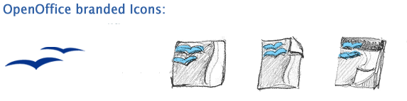
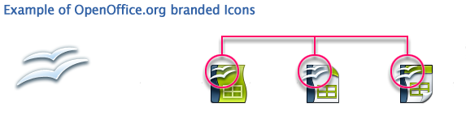

| The branding idea |
|
From the very first the seagull is
the main brand element of Openoffice.org. |
|
|  |
|
| It makes sence to communicate this brand element in all mime type
icons, too. The mime type icons of
OpenOffice.org are: the applications (main and sub application),
documents and templates. The seagull appears
in every single type. |
|
 |
|
|  |
|
|
|
| |
|
|
|
| work in progress... |
|
| |
|
| information |
|
| |
|
An icon transports information and should be easy to recognize.
Make a clear difference between the applications and their files
OpenOffice.org has single applications. It is important to see
clearly which document comes from which single application.
We have to differentiate between: application, document and
template. The application is the main icon of them. The form
of the application icon is the biggest one, too. The document
and the template icons are smaller and less colorful and have
a look like "a bit of the application". |
|
 |
|
| |
|
Use application identifier
Use clear and simple symbols to make it easy to recognize an
appliaction. It is helpful for color blind people to differ the
icons, too.
All icons of one single application (application, document and
template) have the same symbol. The symbol at the application
icon looks a little bit invers to the document and template icon.
This effect give them a look like "a bit of the application",
too.
See all symbols for OpenOffice.org icons. For designing use the
vektor file. |
|
 |
-> all symbols |
| |
|
Colors
Colors are a great way to distribute the emotions and the look
of the branding. Sun reach a harmonic, corporate look when
all applications use the same color table!
See more about the new branding colors.
The color language
The color language of OpenOffice.org is based on the color language
of MS Office. This color code is very popular by Office users.
Do not confuse users with a new color mapping.
|
|
 |
|
| |
|
| |
|